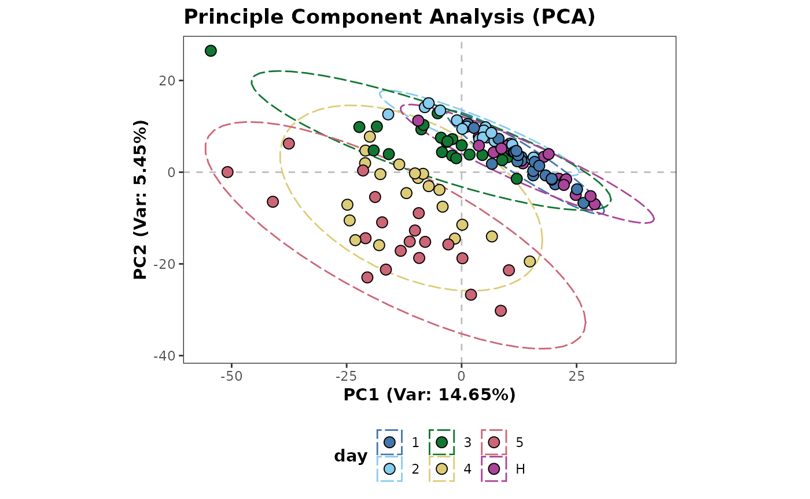
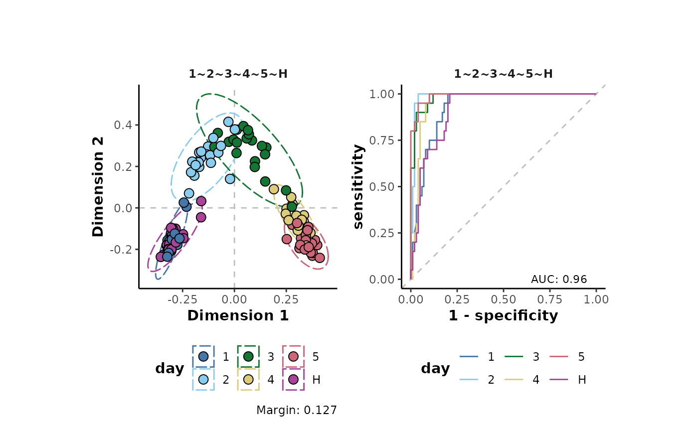
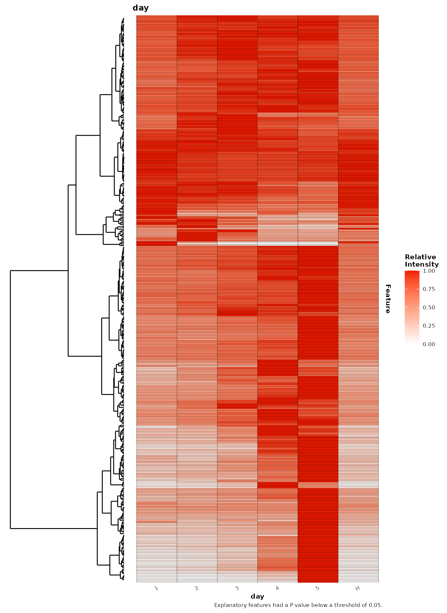
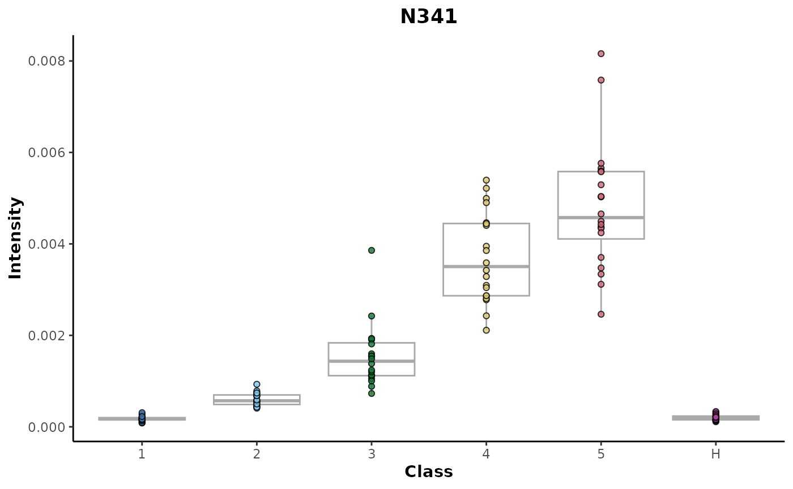

vignettes/quick_start.Rmd
quick_start.RmdThis example analysis will use the abr1 data set from the metaboData package. It is nominal mass flow-injection mass spectrometry (FI-MS) fingerprinting data from a plant-pathogen infection time course experiment. The analysis will also include use of the pipe %>% from the magrittr package. First load the necessary packages.
For this example we will use only the negative acquisition mode data (abr1$neg) and sample meta-information (abr1$fact). Create an AnalysisData class object using the following:
d <- analysisData(abr1$neg,abr1$fact)The data includes 120 samples and 2000 mass spectral features as shown below.
d
#>
#> AnalysisData object containing:
#>
#> Samples: 120
#> Features: 2000
#> Info: 9The clsAvailable() function can be used to identify the columns available in our meta-information table.
clsAvailable(d)
#> [1] "injorder" "pathcdf" "filecdf" "name.org" "remark" "name" "rep"
#> [8] "day" "class"For this analysis, we will be using the infection time course class information contained in the day column. This can be extracted and the class frequencies tabulated using the following:
d %>%
clsExtract(cls = 'day') %>%
table()
#> .
#> 1 2 3 4 5 H
#> 20 20 20 20 20 20As can be seen above, the experiment is made up of six infection time point classes that includes a healthy control class (H) and five day infection time points (1-5), each with 20 replicates.
For data pre-treatment prior to statistical analysis, a two-thirds maximum class occupancy filter can be applied. Features where the maximum proportion of non-missing data per class is above two-thirds are retained. A total ion count normalisation will also be applied.
d <- d %>%
occupancyMaximum(cls = 'day', occupancy = 2/3) %>%
transformTICnorm()
d
#>
#> AnalysisData object containing:
#>
#> Samples: 120
#> Features: 1760
#> Info: 9This has reduced the data set to 1760 relevant features.
The structure of the data can be visualised using both unsupervised and supervised methods. For instance, the first two principle components from a principle component analysis (PCA) of the data with the sample points coloured by infection class can be plotted using:
plotPCA(d,cls = 'day',xAxis = 'PC1',yAxis = 'PC2')
And similarly, multidimensional scaling (MDS) of sample proximity values from a supervised random forest classification model along with receiver operator characteristic (ROC) curves.
plotSupervisedRF(d,cls = 'day')
A progression can clearly be seen from the earliest to latest infected time points.
For feature selection, one-way analysis of variance (ANOVA) can be performed for each feature to identify features significantly explanatory for the infection time point.
anova_results <- d %>%
anova(cls = 'day')A table of the significantly explanatory features can be extracted with a bonferroni correction adjusted p value < 0.05 using:
explan_feat <- explanatoryFeatures(anova_results,threshold = 0.05)
explan_feat
#> # A tibble: 379 x 10
#> Response Comparison Feature term df sumsq meansq statistic p.value
#> <chr> <chr> <chr> <chr> <dbl> <dbl> <dbl> <dbl> <dbl>
#> 1 day 1~2~3~4~5~H N341 respo… 5 3.88e-4 7.76e-5 137. 1.55e-46
#> 2 day 1~2~3~4~5~H N133 respo… 5 7.00e-5 1.40e-5 126. 8.63e-45
#> 3 day 1~2~3~4~5~H N163 respo… 5 6.01e-5 1.20e-5 117. 2.95e-43
#> 4 day 1~2~3~4~5~H N1087 respo… 5 2.42e-6 4.84e-7 99.8 5.61e-40
#> 5 day 1~2~3~4~5~H N171 respo… 5 2.25e-7 4.50e-8 95.7 3.84e-39
#> 6 day 1~2~3~4~5~H N513 respo… 5 3.38e-6 6.76e-7 95.3 4.78e-39
#> 7 day 1~2~3~4~5~H N1025 respo… 5 2.78e-6 5.56e-7 91.0 3.91e-38
#> 8 day 1~2~3~4~5~H N342 respo… 5 3.71e-6 7.41e-7 90.3 5.32e-38
#> 9 day 1~2~3~4~5~H N1083 respo… 5 5.11e-5 1.02e-5 89.0 1.06e-37
#> 10 day 1~2~3~4~5~H N1085 respo… 5 1.10e-5 2.19e-6 83.4 1.92e-36
#> # … with 369 more rows, and 1 more variable: adjusted.p.value <dbl>The ANOVA has identified 379 features significantly explanatory over the infection time course. A heat map of the mean relative intensity for each class of these explanatory features can be plotted to visualise their trends between the infection time point classes.
plotExplanatoryHeatmap(anova_results,
threshold = 0.05,
featureNames = FALSE)
Many of the explanatory features can be seen to be most highly abundant in the final infection time point 5.
Finally, box plots of the trends of individual features can be plotted, such as the N341 feature below.
plotFeature(anova_results,feature = 'N341',cls = 'day')